Enrollments — CBO
How to finish a MySchools-originated enrollment, submit it for review, and track it through DOE approval, registration packet requirements, Admit Code assignment, ACCIS eligibility,and auto-approval.
Overview
Most enrollments don't start in ECMS at all — they start when a parent accepts a placement offer in MySchools, the public-facing site where NYC families browse and apply for early childhood placements. That acceptance flows straight into ECMS as a Draft enrollment. From there, the CBO's Enrollment Manager (a vendor-portal persona, provisioned with the Enrollment Management function — see the Vendor & Site Setup guide) finishes filling out whatever fields MySchools didn't supply and submits it. A DOE Enrollment Specialist then reviews the submission internally and either approves it, rejects it, or sends it back requesting more information. Only once it's approved does the enrollment become Active and the child officially counts as enrolled.
1A parent accepts a placement in MySchools
DO Nothing — this step happens outside ECMS entirely. A parent accepts an offered seat on the MySchools website.
RESULT That acceptance flows into ECMS automatically as a new Enrollment record with Status = Draft. Notice the status path bar at the top of the record: Draft is the very first stage, ahead of Submitted, Information Requested, Rejected, Approved, Active, and Discharged.
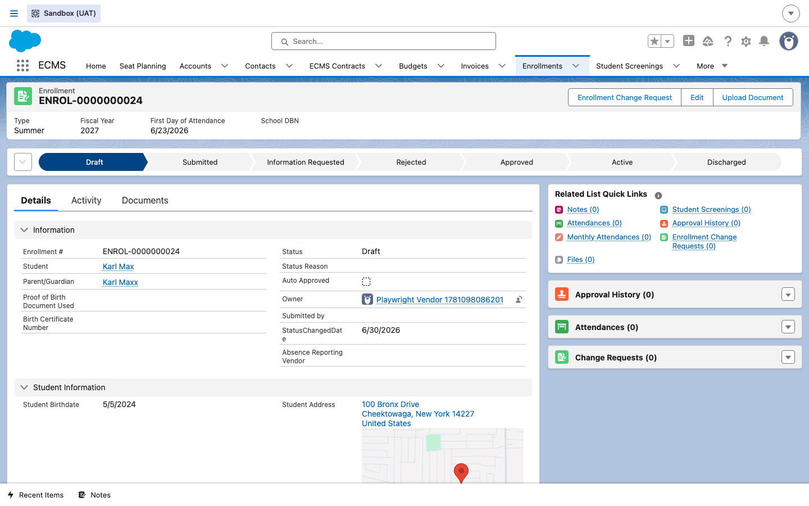
2CBO reviews the portal's Enrollments list
DO The CBO's Enrollment Manager logs into the vendor portal and clicks Student Enrollments in the top navigation.
RESULT The Enrollments list shows every enrollment associated with this user's site(s).
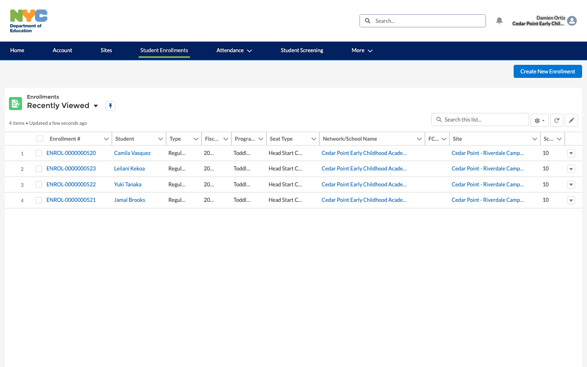
3Finish the remaining enrollment details
DO Click Create New Enrollment and fill in the student's basic details — First Name, Last Name, Birthdate, Gender — then continue through the remaining sections MySchools didn't already supply.
RESULT The wizard walks you through the fields needed before the record can move out of Draft. Continue clicking Next to proceed through the steps.
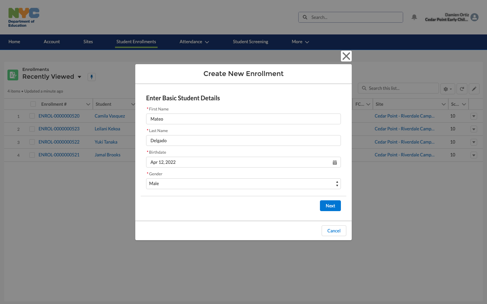
4Registration Packet required before submission
DO On a Draft enrollment, click Upload Document in the record's action bar.
RESULT The Upload Document feature asks for a Content Type with four choices: Registration Packet, Proof of Birth, Proof of Residency, and Other Document. Only the Registration Packet is required. Note: the system checks only for file presence, not document contents.
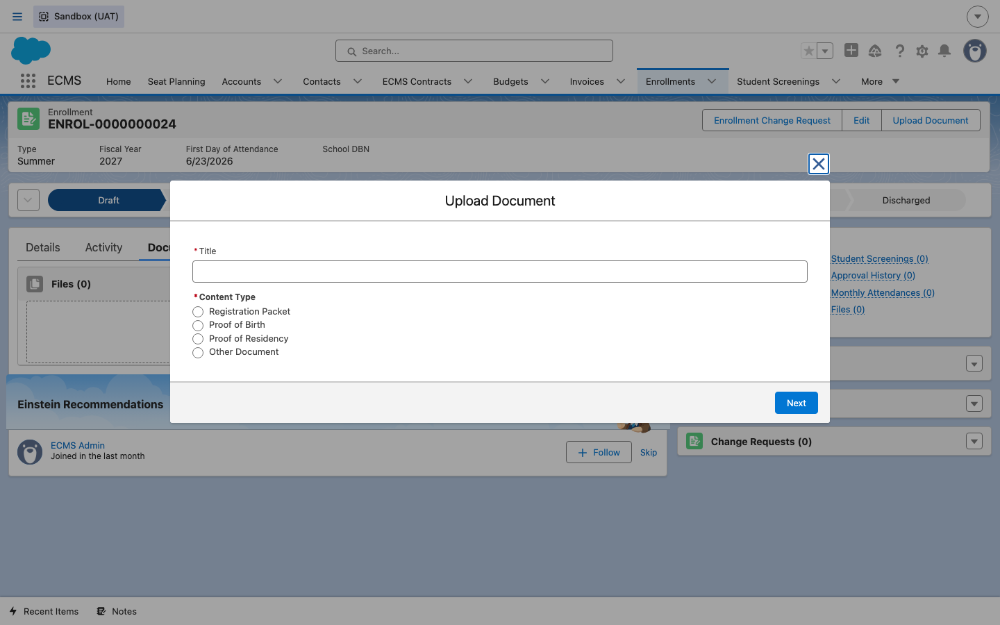
5Submit the enrollment for DOE review
DO Once every required field is complete, the Enrollment Manager clicks Submit Enrollment.
RESULT Status flips from Draft to Submitted; Submitted Date/Time and Submitted by (Vendor) are stamped on the record, and an approval request is automatically created and assigned to the DOE Enrollment Specialist's queue.
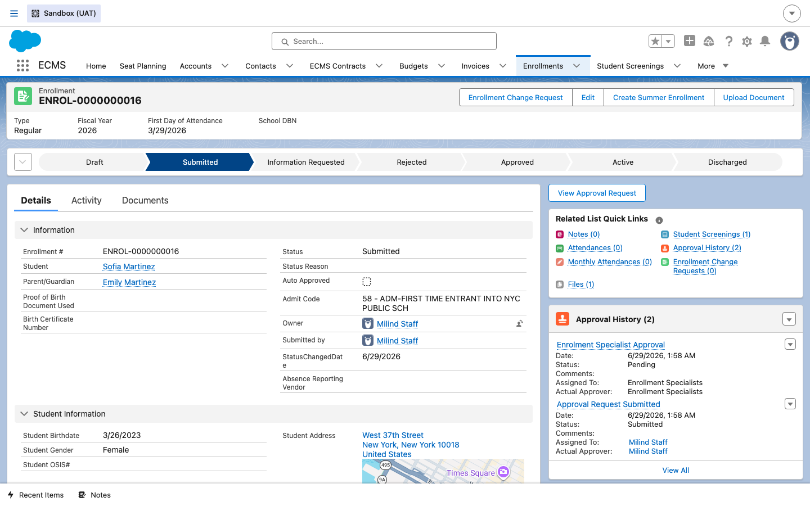
6ACCIS eligibility check on submission
DO Submit an EDY (Extended Day) enrollment for the first time.
RESULT The vendor is required to send an eligibility verification request to ACCIS using the enrollment workflow, providing a case number and child number. A non-eligible response blocks the submission and shows the reason with a visual indicator on the record. An authorized internal Enrollment Specialist can override it. When ACCIS itself rejects the sync — as opposed to an eligibility determination — it will be assigned a distinct status (e.g. "Pending ACCIS Posting for School Year" / "...for Summer") so the rejection can be triaged.
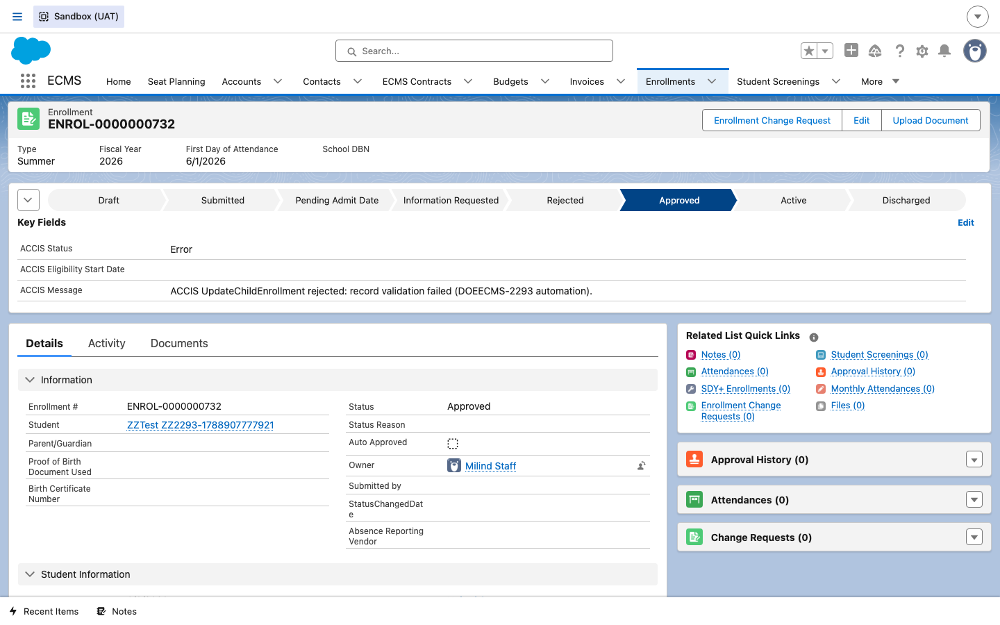
7Admit Code is auto-assigned, not entered
DO Open any enrollment that has been submitted at least once and look for the Admit Code field.
RESULT ECMS auto-populates a non-editable Admit Code field the first time the enrollment is submitted — the user does not set it manually:
- 58 — new child (no OSIS number)
- 56 — returning child from a prior school year (has an OSIS number)
- 54 — same-year transfer (has an OSIS number and another enrollment for the same year); a transfer enrollment can't be submitted while another enrollment is still active
ENROL-0000000001, ENROL-0000000002, and ENROL-0000000003 are all records with Admit Code 58.
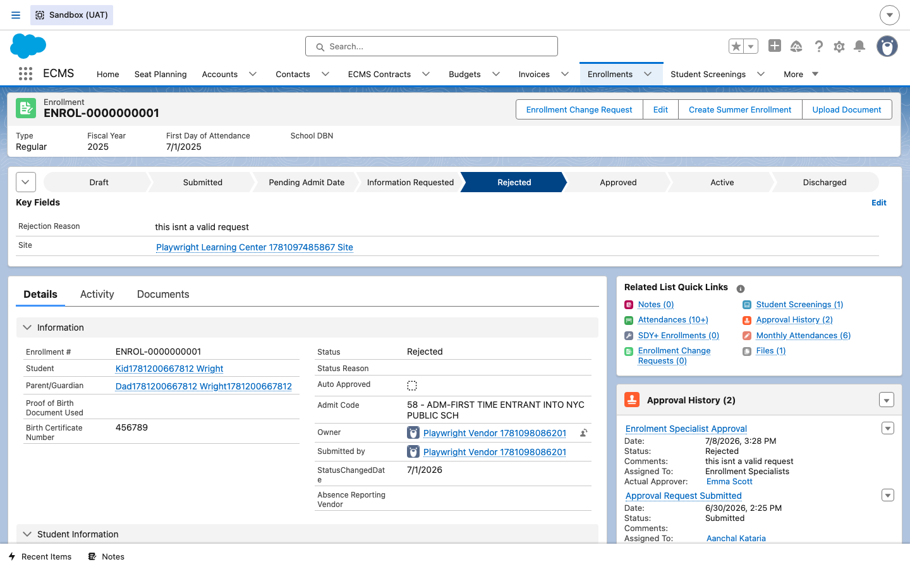
8DOE Enrollment Specialist opens the Submitted queue
DO The Enrollment Specialist clicks the Enrollments tab, then changes the list view to All Enrollments, and searches or sorts by Status to find everything currently sitting at Submitted.
RESULT Every enrollment awaiting DOE action across every CBO/FCCN site appears together, regardless of which site or vendor submitted it — this is effectively the Enrollment Specialist's daily review queue.
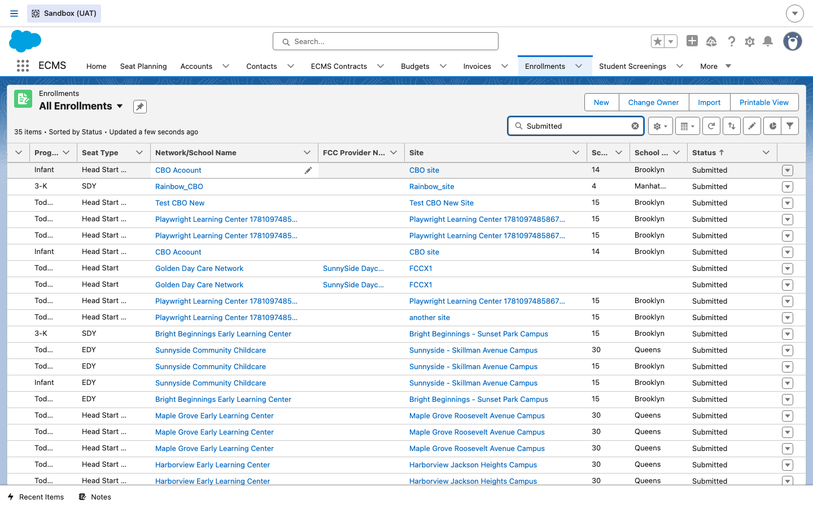
9Review the enrollment before deciding
DO The Enrollment Specialist opens one of the queued records and reviews the student information, site, admission date, and seat type against supporting documentation.
RESULT The record's Approval History related list already shows a pending Enrollment Specialist Approval step, assigned to the Enrollment Specialist's queue — this is what the Specialist is acting on.
10Approve the enrollment
DO Once satisfied, the Enrollment Specialist approves the pending approval request (via View Approval Request on the record, or the standard approval actions in their queue).
RESULT Status advances to Active and the child officially counts as enrolled. The example below, ENROL-0000000521 (Jamal Brooks, Cedar Point – Riverdale Campus), shows exactly this end state: submitted by Damien Ortiz, approved by Enrollment Specialist Emma Scott, with the Approval History recording both steps.
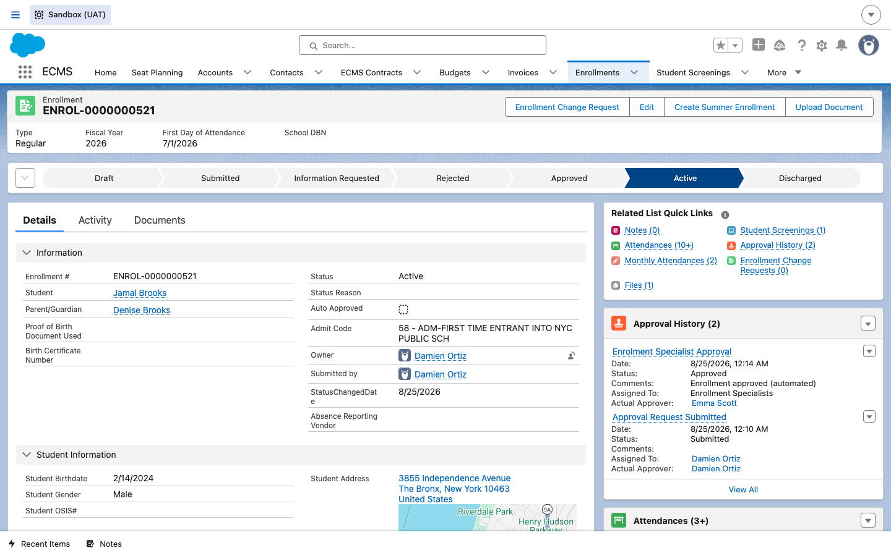
11CBO confirms Active status in the portal
DO Back in the vendor portal, the CBO's Enrollment Manager opens the same enrollment from the Enrollments list.
RESULT The portal shows the identical lifecycle path bar as the internal app, now advanced to Active, along with the child's growing Attendances related list and Student Screenings — confirming from the vendor's own view that the child is fully enrolled and ready for daily attendance to be recorded.
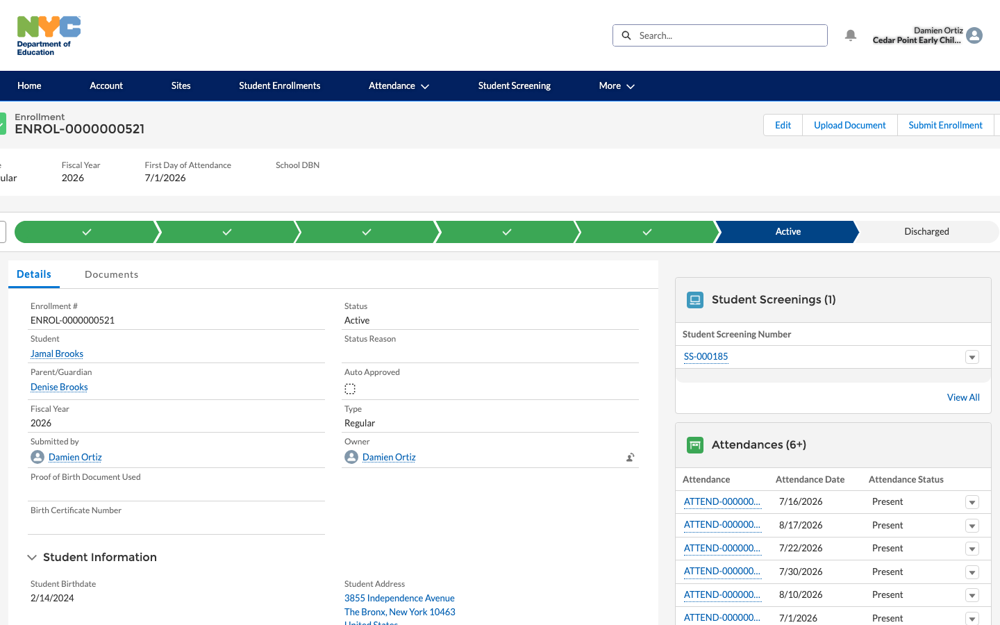
12What happens next
DO Nothing further is required right now — the enrollment is live.
RESULT From here, the CBO records daily Attendance for the child (see the Attendance guide), and the enrollment itself can still be edited, transferred to a different site, or eventually closed out through a formal Discharge — e.g. the child aging out, moving away, or the family deciding to stop — which updates attendance and enrollment records and notifies OASIS, ACCIS, and the other outside systems that track this child so everything stays in sync.
13Returning students can auto-approve
DO Submit a school-year enrollment for a student who was previously enrolled, approved, at the same provider/location, with unchanged key details.
RESULT ECMS auto-approves the enrollment without an Enrollment Specialist review — but only if every one of these holds; any mismatch routes it to the manual review queue instead:
- Same program and provider/location as the student's prior (summer and/or school year) enrollment. Note: a returning student may get enrolled in a different program and is eligible for auto-approval if all other details match.
- The student's most recent enrollment was approved, with matching First Name, Last Name, DOB, and Gender
- The address on the new enrollment matches the address on the prior approved Summer School enrollment
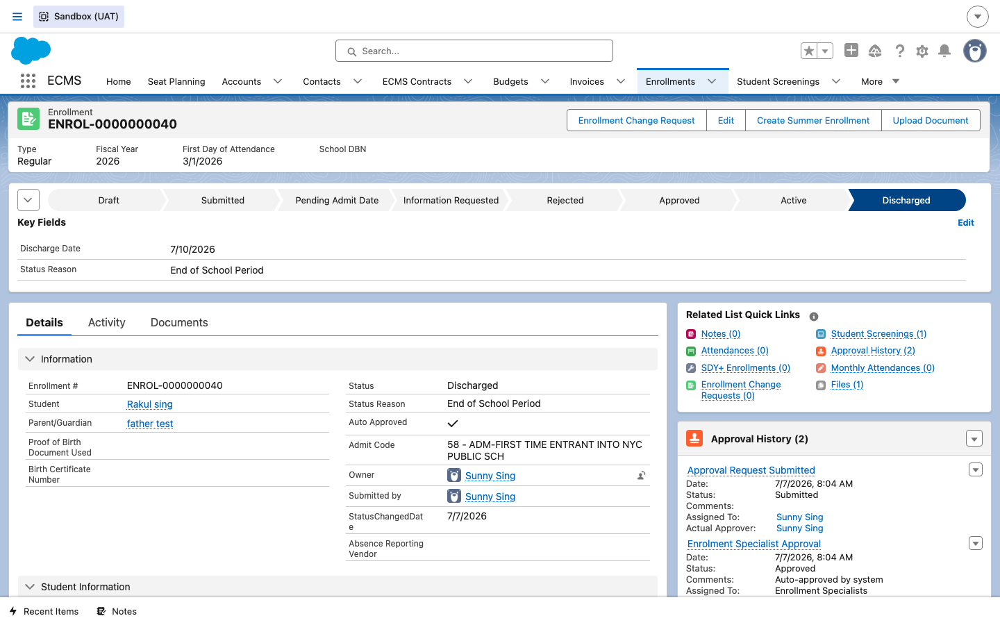
142K enrollments can be submitted with a Pending Admit Date
DO Submit a 2K enrollment (SDY or EDFY seat type only) for a child who is younger than 24 months but will turn 24 months old between September 1 and December 31 of the current calendar year, leaving First Day of Attendance blank.
RESULT Instead of being blocked, the enrollment submits successfully with Status "Pending Admit Date" — First Day of Attendance stays blank until the CBO comes back and fills it in.
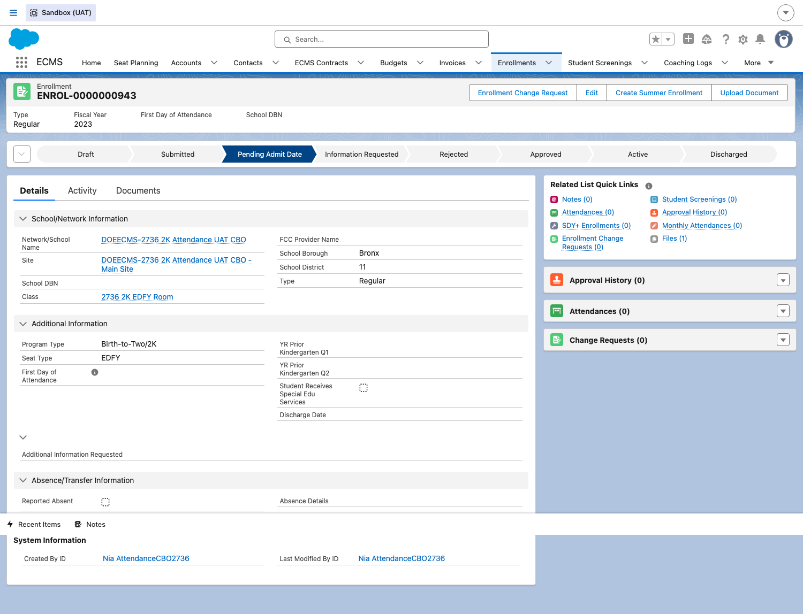
- This only applies to CBO 2K SDY/EDFY enrollments — not other CBO program types, and not FCCN 2K enrollments (FCCN's 2K minimum age is 18 months, not 24).
- A child under 24 months who does not turn 24 within that Sept–Dec window is blocked outright, with this exact message: "This child is not yet eligible to start 2-K until their second birthday. You can submit this as a “Pending Admit Date” record which must be updated directly after the child's planned first date of attendance after the child's second birthday or will be removed from consideration for payment. Email earlychildhoodenrollment@schools.nyc.gov if you have any questions."
- A Pending Admit Date enrollment still counts toward the class's seat occupancy — it isn't "free" capacity just because attendance hasn't started.
- Attendance cannot be taken for a Pending Admit Date enrollment until the CBO fills in First Day of Attendance and re-submits.
- Once First Day of Attendance is filled in and the enrollment is re-submitted, it goes through the normal Submitted → Approved → Active review process — there's no separate approval path for these.
- If First Day of Attendance is never filled in by December 31, the enrollment is rejected and the seat becomes available again.
15Edit is available on every status — with limits
DO From the vendor portal, open any enrollment, regardless of status, and click Edit.
RESULT The Edit button displays for every enrollment status, but only allows users to attach documents for and update the Student Residence Information and Primary Caregiver Information sections — key student/parent identity fields synced from OASIS stay locked, except address. If address is changed, it is sent back to OASIS to keep the systems in sync.
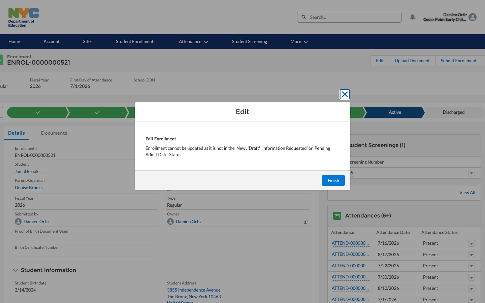
16Change requests: one mechanism, four record types
DO On an Approved or Active enrollment, click Enrollment Change Request.
RESULT You are allowed to make changes on four record types:
- Class Change
- Discharge Request
- Seat Type Change
- Program Type Change
The button only appears on Approved/Active enrollments, and ECMS validates the requested effective date isn't before the admit date, first day of school, or the last effective change date.
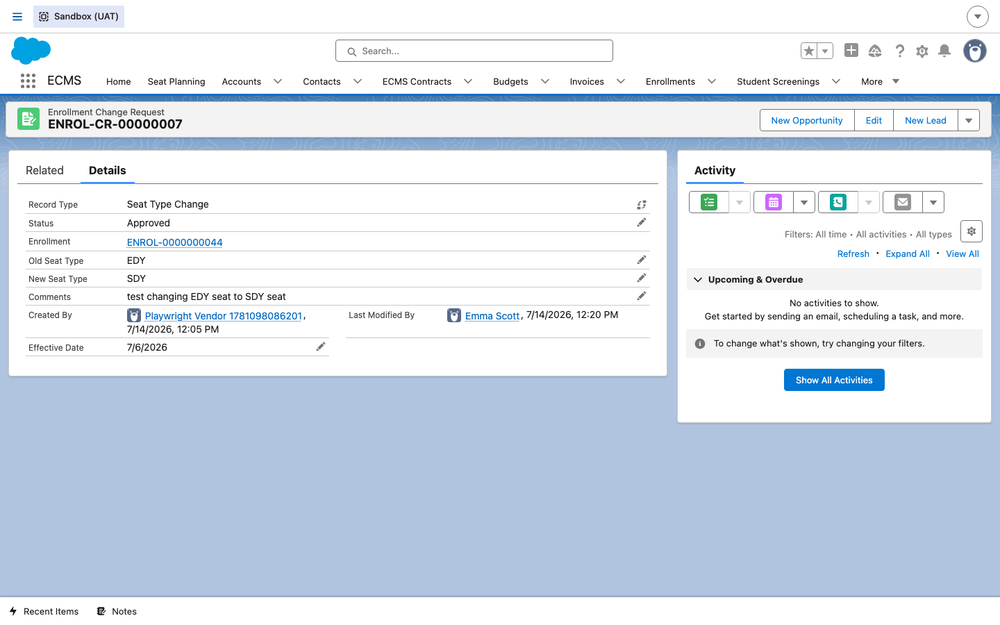